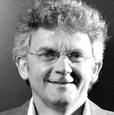

Web de Cologne
What: Meetup, Professionals, Finance, Business, Talks
Date: June 20rd
Time: 3 PM - 8 PM
Entrance: 50 EUR (WdC members free)
At the Web de Cologne event on June 20, 2013 VCs and entrepreneurs from Cologne and NRW will discuss “Sustainable Entrepreneurship vs. Exit Driven Growth“
Afterwards, Web de Cologne invites all attendees to join the networking party on the roof terrace of Thyssen Stiftung.
Speakers
 Daniel Attallah
Daniel Attallah
Founder & CEO Pixum. Born in 1963, Daniel looks back on a successful management career spanning over 20 years, with focus on marketing and sales in various B2B and B2C high-tech companies. In 2000, he founded Pixum. For over 7 years now, his main focus has been on internet marketing. As Pixum's managing director, he is responsible for marketing, business development, investor relations, finances and personnel. A CEO's main task is interacting & I'm from Cologne - so Interactive Cologne is literally my event.
 Jörg Binnenbrücker
Jörg Binnenbrücker
CEO Capnamic
Dr. Lorenz Gräf
Dr. Lorenz Graef is the founder of the internet company Globalpark. As an entrepreneur he leads his business to success and establishes it as an international renowned company. In fall 2011 he left the company and concentrated his interests in the Familie Graef Holding GmbH (FGH). In November 2012 Dr. Lorenz Graef founded STARTPLATZ, a Cologne based hub for entrepreneurs in the Rhineland area. With STARTPLATZ he wants to accelerate high potential startups and lead them to success. Since 1988 he does research in the field of social science informatics and online market research. He is an expert for online based interaction and communication as well as author of different articles and textbooks. Further Dr.Lorenz Graef is co-founder oft he DGOF e.V. (German association of online-research) and was member of the board from 1997 until 2004. By founding this holding he develops his own projects and supports ambitious startups with capital and his expertise. As founder of the accelarator STARTPLATZ our aim is to bring founders and developers together and establish the start-up culture in Cologne. I am glad to join the Interactive Cologne and get in touch with the crowd.
 Joachim Vranken
Joachim Vranken
Joachim Vranken is the founding CEO of kalaydo since 2006 and has held different management positions in the media industry for more than 25 years. He is spokesman of Web de Cologne an association of leading internet companies in the metropolitan areas of Cologne. He is involved in Interactive Cologne from the first moment.
 Marco Zingler
Marco Zingler
Since 2001, Marco Zingler is Managing Director at denkwerk. For more than 14 years, he has worked in the multimedia industry. The studied historian and political scientist was Managing Director of oneview, one of Germany's first Social Networks, from 1999 to 2003 With partners, Marco Zingler founded WEBTRAVEL GmbH in 2004 and leaded the company until 2008. Since 2006, Marco Zingler is the spokesman for the Fachgruppe Agenturen within the BVDW e.V, a member of the general board and since 2009 member of the expert council in the organisation. In 2009, Marco Zingler was appointed to the governmental Media Advisory Board of North Rhine-Westphalia.
About Web de Cologne
Web de Cologne e.V. is a Cologne-based initiative of companies of the internet economy. Since mid-2009, its members meet regularly on networking events to discuss topics of the digital and online industry, intensify existing contacts and forge new ones. Since May 2012, the initiative is an association to represent the interests of the internet economy. Web de Cologne has the goal to connect and promote the internet economy in the Cologne area.